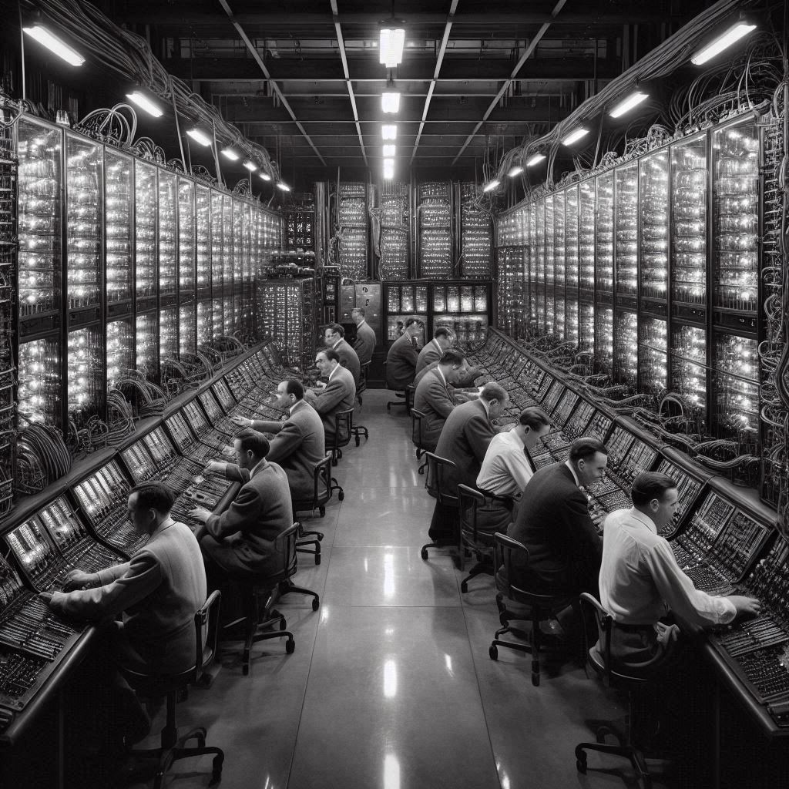
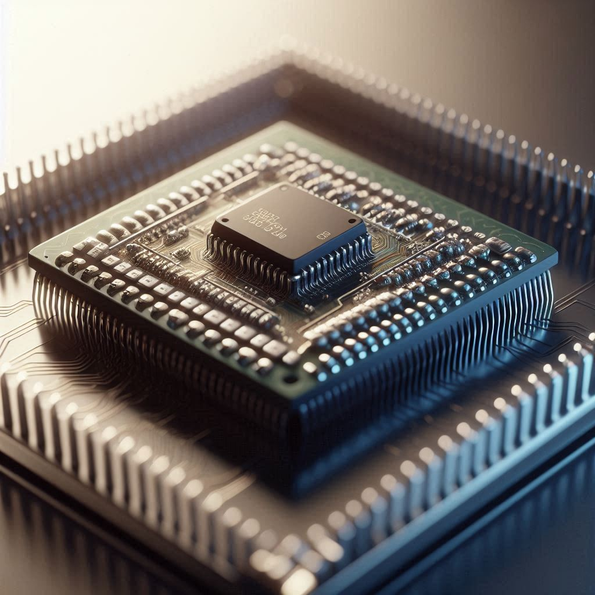
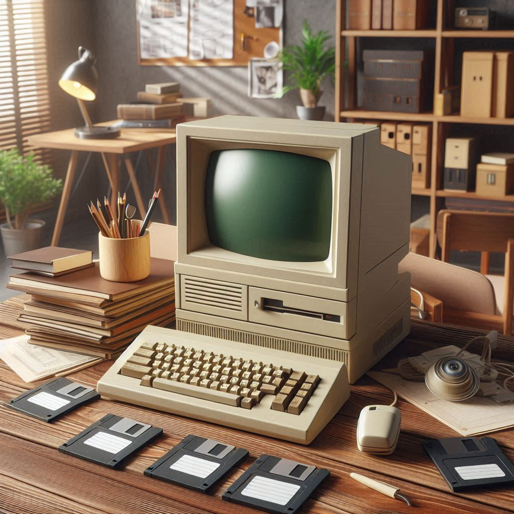
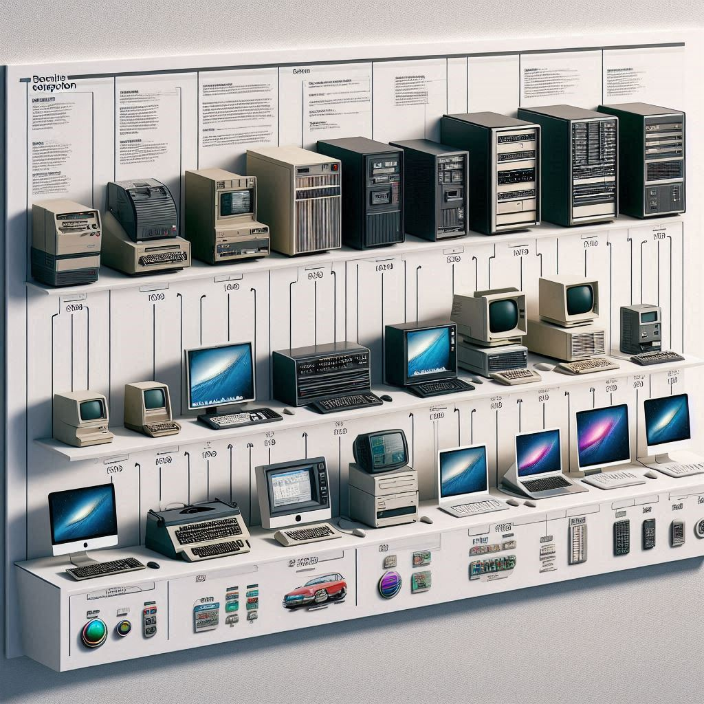

1946 - ENIAC
Pierwszy elektroniczny komputer ogólnego przeznaczenia. Ważył 27 ton, zajmował powierzchnię 167 m² i zużywał 150 kW mocy.
- Prędkość: 5000 operacji na sekundę
- Pamięć: 20 liczb 10-cyfrowych
- Programowanie: przez przełączanie kabli
Od maszyn liczących do superkomputerów - zobacz jak ewoluowała technologia

Pierwszy elektroniczny komputer ogólnego przeznaczenia. Ważył 27 ton, zajmował powierzchnię 167 m² i zużywał 150 kW mocy.

Pierwszy komercyjny mikroprocesor, który zapoczątkował rewolucję mikrokomputerową.

Pierwszy komputer osobisty od IBM, który ustanowił standardy dla branży PC.

Współczesne komputery wykorzystują sztuczną inteligencję, uczenie maszynowe i obliczenia kwantowe.
Termin "bug" (robak) powstał w 1947 roku, gdy w komputerze Harvard Mark II znaleziono ćmę, która spowodowała awarię.
IBM 350 (1956) miał pojemność 5 MB, ważył tonę i kosztował dzisiaj równowartość 3,5 miliona dolarów.
Wynaleziona w 1964 roku przez Douglasa Engelbarta, wykonana była z drewna i miała tylko jeden przycisk.
Osborne 1 (1981) ważył 11 kg, kosztował 1795$ i miał ekran o przekątnej 5 cali.